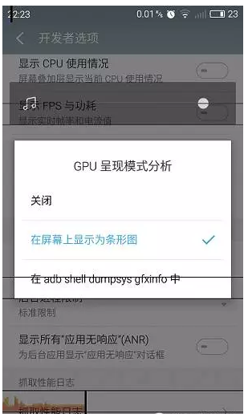
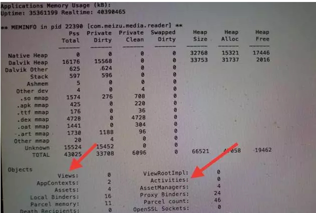
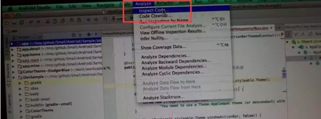
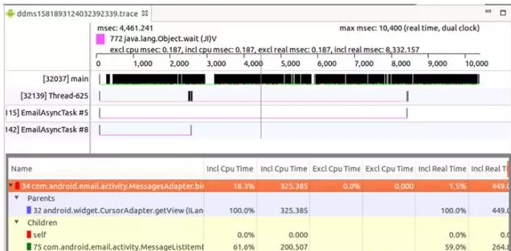
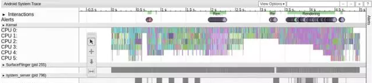

Android客户端性能优化（魅族资深工程师毫无保留奉献）
来源:听云
本文由魅族科技有限公司资深Android开发工程师degao（嵌入式企鹅圈原创团队成员）撰写，是degao在嵌入式企鹅圈发表的第一篇原创文章，毫无保留地总结分享其在领导魅族多个项目开发中的Android客户端性能优化经验，极具实践价值！众所周知，一个好的产品，除了功能强大，好的性能也必不可少。有调查显示，近90%的受访者会因为APP性能差而卸载，性能也是造成APP用户沮丧的头号原因。
那Android客户端性能的指标都有哪些？如何发现和定位客户端的性能问题？本文结合多个项目的开发实践，给出了要关注的重要指标项目，以及定位和解决性能问题的一般步骤。
性能优化应该贯穿于功能开发的全部周期，而不是做完一次后面便不再关注。每次发布版本前，最好能对照标准检查下性能是否达标。
记住：产品=性能×功能！
一、 性能检查项
1. 启动速度
1）这里的启动速度指的是冷启动的速度，即杀掉应用后重新启动的速度，此项主要是和你的竞品对比。
2）不应在Application以及Activity的生命周期回调中做任何费时操作，具体指标大概是你在onCreate，onResume，onStart等回调中所花费的总时间最好不要超过400ms，否则用户在桌面点击你的应用图标后，将感觉到明显的卡顿。
2. 界面切换
1）应用操作时，界面和动画不应有明显卡顿;
2）可通过在手机上打开 设置->开发者选项->调试GPU过度绘制，然后操作应用查看gpu是否超线进行初步判断；

3. 内存泄露
1)back退出不应存在内存泄露，简单的检查办法是在退出应用后，用命令adb shell dumpsys meminfo 应用包名查看 Activities Views 是否为零;
2)多次进入退出后的占用内存TOTAL不应变化太大；

4. onTrimMemory回调
1）应用响应此回调释放非必须内存；
2）验证可通过命令adb shell dumpsys gfxinfo 应用包名-cmd trim 5后，再）用命令adb shell dumpsys meminfo 应用包名查看内存大小。
5. 过度绘制
打开设置中的GPU过度绘制开关，各界面过度绘制不应超过2.5x；也就是打开此调试开关后，界面整体呈现浅色，特别复杂的界面，红色区域也不应该超过全屏幕的四分之一；
6. lint检查
1）通过Android Studio中的 Analyze->Inspect Code 对工程代码做静态扫描；找出潜在的问题代码并修改；
2） 0 error & 0 warning，如果确实不能解决，需给出原因。

7. 反射优化
1）在代码中减少反射调用；
2）对频繁调用的返回值进行Cache；
8. 稳定性
1）连续48小时monkey不应出现闪退，anr问题。
2）如果应用接入了数据埋点的sdk，比如百度统计sdk等，这些sdk都会将应用的崩溃信息上报回来，开发者应每天关注这些统计到的崩溃日志，严格控制应用的崩溃率；
9. 耗电
1）应用进入后台后不应异常消耗电量；
2）操作应用后，退出应用，让应用处于后台，一段时间后通过adb shell dumpsys batterystats查看电量消耗日志看是否存在异常。
二、性能问题常见原因
性能问题一般归结为三类：
- 1.UI卡顿和稳定性:这类问题用户可直接感知，最为重要；
- 2.内存问题：内存问题主要表现为内存泄露，或者内存使用不当导致的内存抖动。如果存在内存泄露，应用会不断消耗内存，易导致频繁gc使系统出现卡顿，或者出现OOM报错；内存抖动也会导致UI卡顿。
- 3.耗电问题：会影响续航，表现为不必要的自启动，不恰当持锁导致系统无法正常休眠，系统休眠后频繁唤醒系统等；
三、UI卡顿常见原因和分析方法
下面分别介绍出现这些问题的常见原因以及分析这些问题的一般步骤。
1.卡顿常见原因
1）人为在UI线程中做轻微耗时操作，导致UI线程卡顿；
2） 布局Layout过于复杂，无法在16ms内完成渲染；
3）同一时间动画执行的次数过多，导致CPU或GPU负载过重；
4） View过度绘制，导致某些像素在同一帧时间内被绘制多次，从而使CPU或GPU负载过重；
5） View频繁的触发measure、layout，导致measure、layout累计耗时过多及整个View频繁的重新渲染；
6） 内存频繁触发GC过多（同一帧中频繁创建内存），导致暂时阻塞渲染操作；
7） 冗余资源及逻辑等导致加载和执行缓慢；
8）工作线程优先级未设置为
Process.THREAD_PRIORITY_BACKGROUND 导致后台线程抢占UI线程cpu时间片，阻塞渲染操作；
9） ANR；
2. 卡顿分析解决的一般步骤
1）解决过度绘制问题
在设置->开发者选项->调试GPU过度绘制中打开调试，看对应界面是否有过度绘制，如果有先解决掉：
定位过渡绘制区域
利用Android提供的工具进行位置确认以及修改(HierarchyView , Tracer for OpenGL ES)
定位到具体的视图(xml文件或者View)
通过代码和xml文件分析过渡绘制的原因
结合具体情况进行优化
使用Lint工具进一步优化
2) 检查是否有主线程做了耗时操作：
严苛模式（StrictMode），是Android提供的一种运行时检测机制，用于检测代码运行时的一些不规范的操作，最常见的场景是用于发现主线程的IO操作。应用程序可以利用StrictMode尽可能的发现一些编码的疏漏。
- 开启 StrictMode
- 对于应用程序而言，Android 提供了一个最佳使用实践：尽可能早的在
android.app.Application或android.app.Activity的生命周期使能 StrictMode，onCreate()方法就是一个最佳的时机，越早开启就能在更多的代码执行路径上发现违规操作。 - 监控代码
public void onCreate() {
if (DEVELOPER_MODE) {
StrictMode.setThreadPolicy(new StrictMode.ThreadPolicy.Builder()
.detectAll() .penaltyLog() .build());
StrictMode.setVmPolicy(new StrictMode.VmPolicy.Builder()
.detectAll() .penaltyLog() .build());
}
super.onCreate();
}
如果主线程有网络或磁盘读写等操作，在logcat中会有"D/StrictMode"tag的日志输出，从而定位到耗时操作的代码。
3）如果主线程无耗时操作，还存在卡顿，有很大可能是必须在UI线程操作的一些逻辑有问题，比如控件measure、layout耗时过多等，此时可通过Traceview以及systrace来进行分析。
4）Traceview：Traceview主要用做热点分析，找出最需要优化的点。
打开DDMS然后选择一个进程，接着点击上面的“Start Method Profiling”按钮（红色小点变为黑色即开始运行），然后操作我们的卡顿UI,然后点击"Stop Method Profiling",会打开如下界面：

图中展示了Trace期间各方法调用关系，调用次数以及耗时比例。通过分析可以找出可疑的耗时函数并进行优化；
5）systrace：抓取trace：
执行如下命令：
$ cd android-sdk/platform-tools/systrace
$ python systrace.py --time=10 -o mynewtrace.html sched gfx view wm
> 操作APP，然后会生成一个mynewtrace.html 文件，用Chrome打开。
图示如下：

通过分析上面的图，可以找出明显存在的layout，measure，draw的超时问题。
6）导入如下插件，可通过在方法上添加@DebugLog来打印方法的耗时：
build.gradle:
buildscript {
dependencies {
//用于方便调试性能问题的打印插件。给访法加上@DebugLog，就能输出该方法的调用参数，以及执行时间；
classpath 'com.jakewharton.hugo:hugo-plugin:1.2.1'
}
}
//用于方便调试性能问题的打印插件。给访法加上@DebugLog，就能输出该方法的调用参数，以及执行时间；
apply plugin: 'com.jakewharton.hugo'
java：
@DebugLog public void test( int a ){ int b=a*a; }
## 四、内存性能分析优化
### 1.内存泄露
该问题目前在项目中一般用leakcanary基本就能搞定，配置起来也相当简单：
build.gradle: dependencies { debugCompile 'com.squareup.leakcanary:leakcanary-android:1.3.1' // or 1.4-beta1 releaseCompile 'com.squareup.leakcanary:leakcanary-android-no-op:1.3.1' // or 1.4-beta1 testCompile 'com.squareup.leakcanary:leakcanary-android-no-op:1.3.1' // or 1.4-beta1 }
java: public class ExampleApplication extends Application {
@Override public void onCreate() { super.onCreate(); LeakCanary.install(this); } }
一旦有内存泄露，将会在通知栏生成一条通知，点开可看到泄露的对象以及引用路径：

### 2.内存抖动
如果代码中存在在`onDraw`或者`for`循环等多次执行的代码中分配对象的行为，会导致运行过程中gc次数增多，影响ui流畅度。一般这些问题都可通过`lint`工具检测出来。
## 五、耗电量优化建议
电量优化主要是注意尽量不要影响手机进入休眠，也就是正确申请和释放WakeLock，另外就是不要频繁唤醒手机，主要就是正确使用Alarm。
## 六、一些好的代码实践
* 节制地使用Service
* 当界面不可见时释放内存
* 当内存紧张时释放内存
* 避免在Bitmap上浪费内存
对大图片，先获取图片的大小信息，根据实际需要展示大小计算inSampleSize，最后decode；
public static Bitmap decodeSampledBitmapFromFile(String filename, int reqWidth, int reqHeight) { // First decode with inJustDecodeBounds=true to check dimensions final BitmapFactory.Options options = new BitmapFactory.Options(); options.inJustDecodeBounds = true; BitmapFactory.decodeFile(filename, options);
// Calculate inSampleSize
options.inSampleSize = calculateInSampleSize(options,reqWidth,reqHeight);
// Decode bitmap with inSampleSize set
options.inJustDecodeBounds = false;
return BitmapFactory.decodeFile(filename, options);
}
public static int calculateInSampleSize(BitmapFactory.Options options,int reqWidth, int reqHeight) { // Raw height and width of image final int height = options.outHeight; final int width = options.outWidth; int inSampleSize = 1; if (height > reqHeight || width > reqWidth) { if (width > height) { inSampleSize = Math.round((float) height / (float) reqHeight); } else { inSampleSize = Math.round((float) width / (float) reqWidth); } } return inSampleSize; }
* 使用优化过的数据集合
* 谨慎使用抽象编程
* 尽量避免使用依赖注入框架
很多依赖注入框架是基于反射的原理，虽然可以让代码看起来简洁，但是是有碍性能的。
* 谨慎使用external libraries
* 优化整体性能
* 使用ProGuard来剔除不需要的代码
android { buildTypes { release { minifyEnabled true shrinkResources true proguardFiles getDefaultProguardFile('proguard-android.txt'), 'src/main/proguard-project.txt' signingConfig signingConfigs.debug } }
* 慎用异常,异常对性能不利
抛出异常首先要创建一个新的对象。`Throwable`接口的构造函数用名为`fillInStackTrace()`的本地方法,`fillInStackTrace()`方法检查栈,收集调用跟踪信息。只要有异常被抛出,VM 就必要调整调用栈,因为在处理过程中创建了一个新对象。异常只能用于错误处理,不应该用来控制程序流程。
以下例子不好：
try { startActivity(intentA); } catch () { startActivity(intentB); }
应该用下面的语句判断：
if (getPackageManager().resolveActivity(intentA, 0) != null) ```
不要再循环中使用try/catch语句,应把其放在最外层，使用System.arraycopy()代替for循环复制。
更多Android、Linux、嵌入式和物联网原创技术分享敬请关注微信公众号：嵌入式企鹅圈。